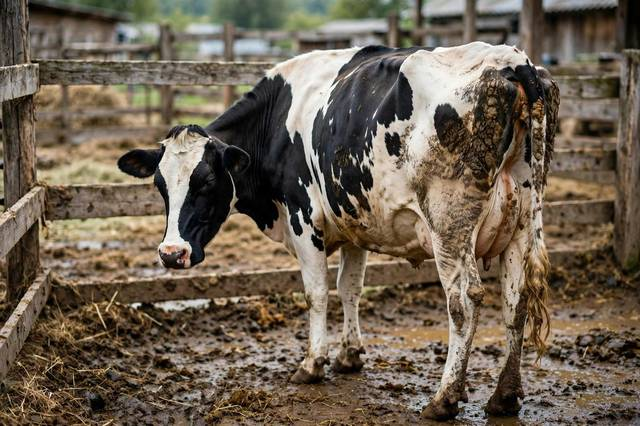
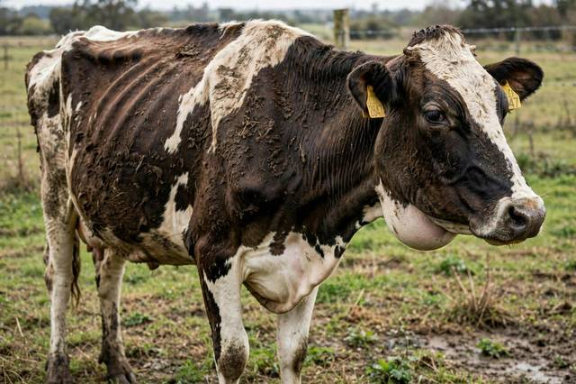
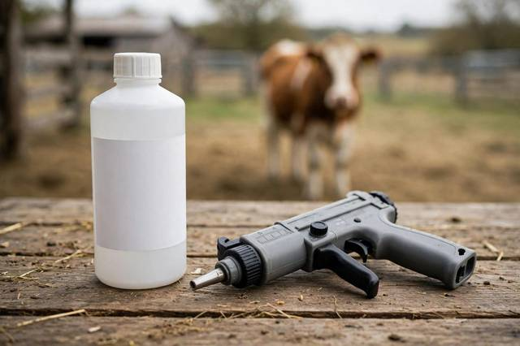

Gastrointestinal worms (nematodes) in cattle can reduce growth, feed efficiency and milk production, especially in young grazing cattle. Disease impact depends on worm species, pasture contamination and host immunity.
This guide covers clinical signs, causes, diagnosis, treatment principles and prevention.
Clinical Signs
1
Poor growth(Grows more slowly than normal)
2
Weight loss(Loses weight despite eating)
3
Diarrhoea(Loose watery faeces)
4
Rough coat(Dull, staring hair coat)
5
Anaemia(Pale gums and eyelids)
6
Bottle jaw(Soft swelling under the jaw)
Poor growthWeight loss

DiarrhoeaRough coatAnaemia

Bottle jaw
Causes and Transmission
Animals ingest infective larvae while grazing contaminated pasture. Weather, stocking rate, grazing management and age affect exposure and infection pressure.
Pathogenesis
Cattle ingest infective larvae from pasture. The larvae settle in the abomasum or intestine, where adult worms feed on blood or damage the gut lining. Ostertagia damages the glands of the abomasum, reducing acid production and protein digestion, so protein leaks into the gut, while Haemonchus sucks blood and causes anaemia.
Heavy worm burdens cause weight loss, diarrhoea, bottle jaw (fluid under the jaw from low blood protein) and poor growth; severe infections can kill young animals.
Veterinary Diagnosis
Faecal egg counts, larval culture and herd performance records help guide diagnosis and control. A single faecal egg count may not reflect all parasite burdens or species.
Differential Diagnosis
Several conditions can look similar. A veterinarian distinguishes them by the signs, history and laboratory findings:
Liver fluke — causes anaemia, bottle jaw and weight loss, often with a history of wet pasture.
Coccidiosis — causes bloody diarrhoea, mainly in calves.
Johne's disease — causes chronic wasting diarrhoea in adult cattle.
Malnutrition or mineral deficiency — cause poor condition without diarrhoea or anaemia.
Treatment and Case Management
Anthelmintic choice should be based on likely parasite species, local resistance patterns and veterinary advice. Dose accurately by weight and follow product directions and withdrawal periods. Avoid routine under-dosing and unnecessary repeated treatment.
When to seek urgent help: Severe anaemia, marked bottle jaw, dehydration or rapid weight loss warrants veterinary attention.
Recommended Medicines
1
Anthelmintic – Ivermectin(Kills stomach and intestinal roundworms)0.2 mg/kg SC
2
Anthelmintic – Albendazole(Kills stomach and intestinal worms)7.5 mg/kg PO
3
Anthelmintic – Levamisole(Kills stomach and intestinal roundworms)7.5 mg/kg PO/SC
4
Supportive care – Multivitamins(Supports recovery in weak, anaemic animals)10 ml IM daily
⚠ Important Tips:
Dose dewormers accurately by body weight — under-dosing builds resistance.
Rotate dewormers only on veterinary advice and follow withdrawal periods.
Use dewormers only under veterinary advice.
Check for anaemia and bottle jaw regularly in grazing cattle.
Where several dewormers are listed, the veterinarian chooses ONE — never use them all together.

Oral medicine / drench — dose as the vet advisesInjection — vet-administered only
Prevention and Herd Management
Use targeted selective treatment, pasture management, quarantine protocols for new stock, regular weight monitoring and faecal testing where available. Preserve refugia as advised by parasite-control specialists.
Frequently Asked Questions
What are the symptoms of worms in cattle?
Poor growth, weight loss, diarrhoea, a rough coat, and anaemia or bottle jaw with some species. Many infections are subclinical and mainly reduce performance.
How do cattle get gastrointestinal worms?
Animals ingest infective larvae while grazing contaminated pasture. Weather, stocking rate, grazing management and age affect exposure and infection pressure.
How are worms in cattle diagnosed?
Faecal egg counts, larval culture and herd performance records help guide diagnosis and control. A single faecal egg count may not reflect all parasite burdens or species.
How are gastrointestinal worms in cattle treated?
Anthelmintic choice should be based on the likely parasite species, local resistance patterns and veterinary advice. Dose accurately by weight and follow product directions and withdrawal periods. Avoid routine under-dosing and unnecessary repeated treatment.
How can worm infections in cattle be prevented?
Use targeted selective treatment, pasture management, quarantine protocols for new stock, regular weight monitoring and faecal testing where available. Preserve refugia as advised by parasite-control specialists.
How to deworm cattle?
Anthelmintic choice should be based on the likely parasite species, local resistance patterns and veterinary advice. Dose accurately by weight, follow product directions and withdrawal periods, and avoid routine under-dosing.
What are the signs of worms in cows?
Poor growth, weight loss, diarrhoea, a rough coat, and anaemia or bottle jaw with some species. Many infections are subclinical and mainly reduce performance, so faecal egg counts help guide control.
گائے میں پیٹ کے کیڑوں کی علامات کیا ہیں؟
وزن میں کمی، کمزور نشوونما، دست، کھردرا بال اور بعض صورتوں میں خون کی کمی یا جبڑے کے نیچے سوجن پیٹ کے کیڑوں کی علامات ہیں۔ بہت سے انفیکشن بغیر واضح علامت کے صرف پیداوار کم کرتے ہیں۔ علاج کے لیے ویٹرنری ڈاکٹر سے مشورہ کریں۔
Key Takeaway
Early recognition, accurate diagnosis, responsible veterinary care and herd-level prevention are central to managing this condition. Follow current local veterinary authority guidance and medicine labels.
Radostits, O.M., Gay, C.C., Hinchcliff, K.W., Constable, P.D. Veterinary Medicine: A Textbook of the Diseases of Cattle, Horses, Sheep, Pigs and Goats.
FAO animal health manuals. Food and Agriculture Organization of the United Nations.
✍️ Written by Dr. Shahid Bilal Depal, DVM (PVMC RVMP #15068)
This guide is for educational purposes. Consult a registered veterinarian for diagnosis and treatment.